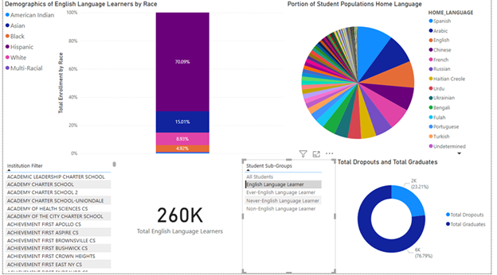

The artifact chosen for this milestone was the final project from DAD 220: Introduction to relational databases. In this final project, we performed data analytics on a database of order history for certain products from a fictious company. This data included the purchase history as well as the return history for given products at the company and the goal of the project was to utilize MySQL queries to view the data and create an analysis of the data. While I had the final paper that I wrote for this class, I was unable to recover the dataset from my advisor and had to pivot to a different dataset to use with this class. In this case, I found a public dataset on English Language Learners (ELL) from education institutions in New York state from the New York State Education Departments publicly available data. This data showcases the demographics of different English language learning students, along with their graduation rates, home-spoken languages, and grade levels. For my enhancement, I decided to expand further on the topic of data analytics by creating a data visualization dashboard, allowing the end-user to select an institution to get a more detailed visual breakdown of these different data points.
I believe that a data visualization artifact is a perfect addition to a portfolio focused on Artificial Intelligence (AI) as there is not only a large scope of data to work with within the field of AI, but also the need to tell stories with this data. One of the most powerful tools in communicating a story on data is visualization, which closely aligns with the need to work with databases and large datasets. Creating visual representations of data allows for us as software experts to better convey information to less technical people, and humans are visual creatures, meaning that a line graph showing a trend is a lot more powerful than a matrix of ascending numbers.
This artifact is a very useful showcase of my software engineering skills as it focuses heavily on the databases side of software engineering. With cases such as this one, the data needs to be manipulated and adjusted to accommodate the visualization tool to ensure that it is communicating a compelling story, while still ensuring a level of security and showcasing a high level of communication to non-technical people. With my dataset, I intentionally picked a public dataset from a trusted organization as I knew this would have the most secure data, that being data that excludes private information. In the case that this data did contain private information, I would ensure that I would find the best way to filter this data such that the private information was not accessible, while still giving the same compelling story with the visualization.
Furthermore, to reemphasize the importance of visualizations, these are one of the best tools for communicating with non-technical audiences. This is a perfect example of a part of a presentation that I could use with relevant stakeholders to discuss how certain factors may be impacting the result of the data. In this case, my dashboard was focused on the demographics of the students, including race and spoken language at home, with the intent on demonstrating any trends with graduation and dropout rates. This data may be helpful to determine which students of given demographics may need the most assistance to ensure they are also able to graduate, all of which is made easier to understand by visualization.
As for the course outcome coverage, I believe that I covered creating collaborative environments, designing and creating professional forms of communication, demonstrating the use of well-founded techniques and developed this project with a security mindset. This artifact heavily leans towards creating collaborative and effective communication for non-technical audiences. This allows people in higher level positions to make the necessary decisions needed for the entire company by using existing data and seeing the visual trends of the business.
Furthermore, I believe this artifact captures number the need to use well-founded techniques very well with the intent on using these techniques to solve business related problems. In the case of observing data, it wouldn’t be very useful for non-technical people to need to concern themselves with the queries or the raw data points that go into the visualizations that we create. Using Microsoft Power BI allows me to utilize the best fit tool for creating a useful tool that will give value to the leaders and allow them to make further decisions. Finally, although there wasn’t much of an opportunity in this artifact, it’s still worth pointing out that there needs to be a security mindset when working with large datasets. Any time there is the possibility for personal information to be exposed, it’s worth taking the time to filter the data and obscure any data that doesn’t need to be used for the visualization. In the case of this artifact, I ensured to pick a well-trusted data source and then also review the data for any personal information before using it wholly in the dashboard.
Overall, the result was the visual dashboard shown below:

This is the overarching view of the entire dataset for all ELL students in New York state. This can be further refined by selecting an institution on the bottom-left to get a result like this:

This is used to show what portion of the ELL students were from different races with which spoken languages at home. This can also be filter by the bottom right of the dashboard which highlights the Dropout / Graduation rates for the student sub-groups, see the example below:

Overall, this was a very interesting and challenging artifact to create. The biggest challenge was learning an entirely new piece of software, that being Microsoft Power BI. This was something that took a couple days to truly get a grasp on, and even more-so with determining what the best graphs were to visualize the data. There are many different types of visualizations that could be used to view the data, but not all of them will have the same impact. As an example, when creating a porportional graph of the race demographic I started by creating a bar graph, however this didn’t seem to work well for the data as it wasn’t communicating as strongly the portions of the total population that were a given race. Ultimately the stacked bar chart was the best option for this, as it still presented the data in a bar chart while showing the relative size of each dataset, making the visual more powerful to showcase what the demographic looks like.